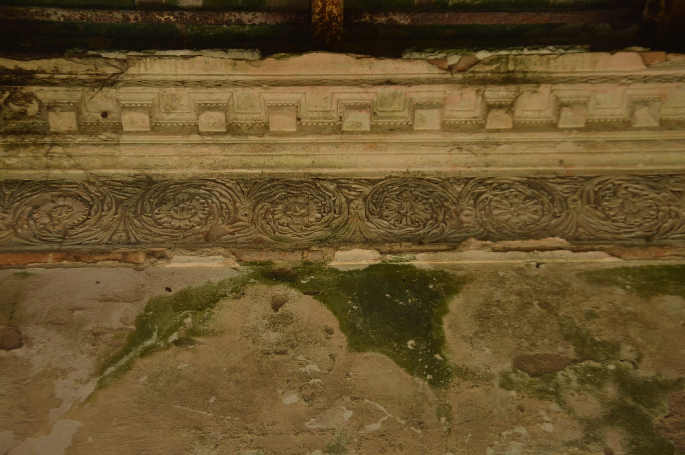

Selected Writings

- Fighting Ecocide in the Bengal Delta (interview with Anu Muhammad) in The Funambulist
- Smoke Signals: Incense and Sacred Rituals in Bengal in Bagh-e Hind
- Rip Tides in Caravan
- Dhaka Art Summit: Cultural Capital and the Long Tail of Colonial Time in March
- Hundi & Hawala in Migrant Journal
- Fleeing Myanmar in New Internationalist
- Zuckerberg, Disease, and Technology in The California Review of Images and Mark Zuckerberg
Photo credit : Parsa Sanjana Sajid